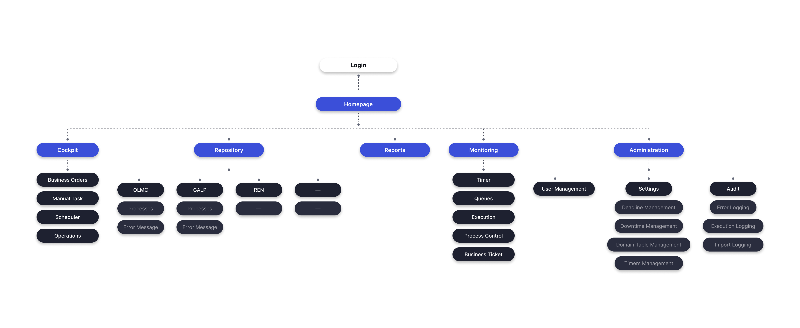
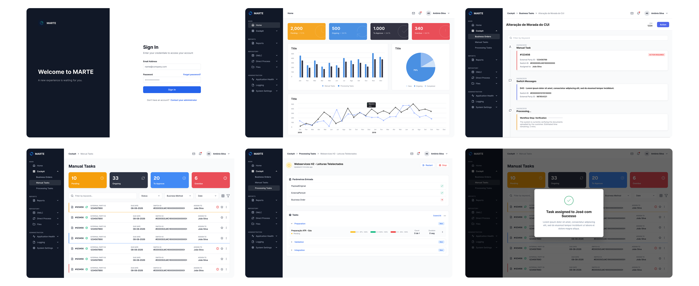

Task Management
Transforming a cluttered, confusing portal into a clear, modern environment workers could understand immediately — no training required.
Clear task
management
Marte is a portal for analysing and managing tasks. The existing system was complex and difficult for workers to navigate — creating friction in daily operations and reducing productivity.
The challenge was transforming a cluttered, confusing interface into a clear, modern environment that workers could use and understand immediately without extensive training.
I designed a clean, structured web portal that simplified task workflows and made information hierarchy immediately apparent. The interface prioritises clarity over density — every element earns its place on screen.
Using OutSystems patterns as the component foundation ensured consistency with existing internal tools while introducing a significantly improved user experience.
Decisions &
rationale
Clarity over density
Every element has to earn its place on screen. Generous whitespace and strong typography keep each view scannable instead of overwhelming.
A clear mental model
Structure rebuilt around tasks, projects, and analytics, with progressive disclosure so detail appears only when it's needed.
Reusable components
Task cards, status filters, priority badges, and data tables designed as a consistent set — predictable for users, efficient for developers.
OutSystems foundation
Building on existing component patterns kept the portal consistent with internal tools and fast to ship.
Watching the
real workflow
I interviewed the people who used the portal every day and mapped their existing task workflows end to end. Seeing the work as they experienced it surfaced exactly where the tool fought them rather than helped them.
Three problems dominated: information overload, unclear hierarchy, and too many steps to complete common actions. Naming them precisely turned a vague "it's confusing" into a concrete list the design could answer to.

What was
delivered
